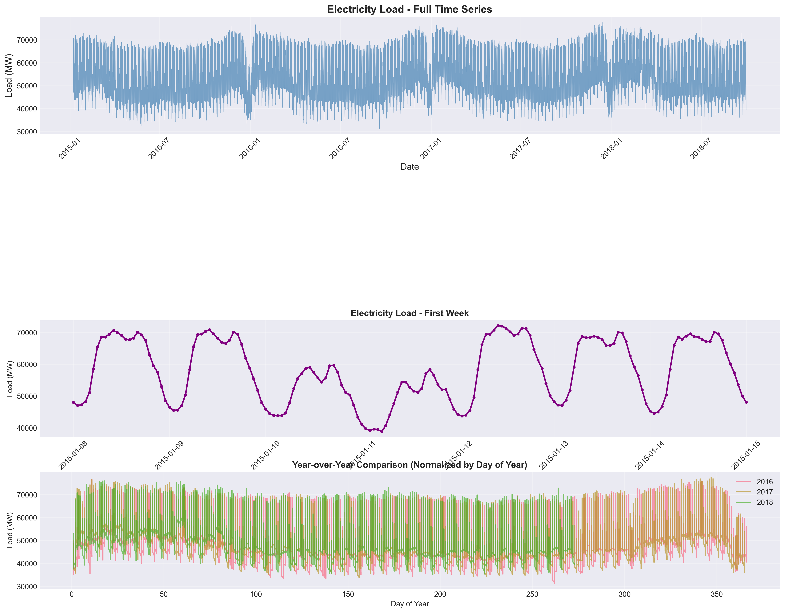
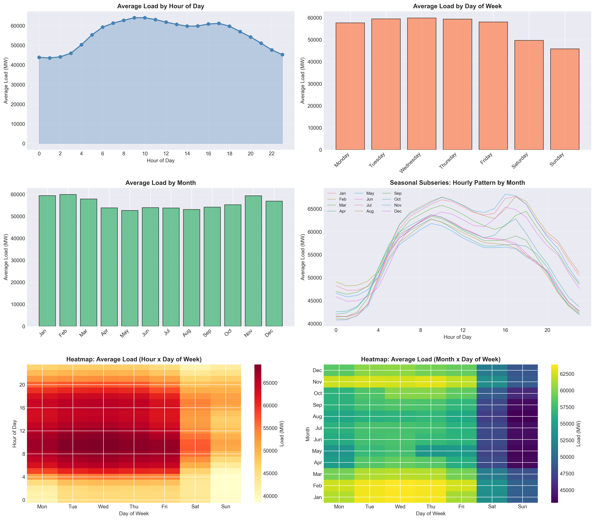
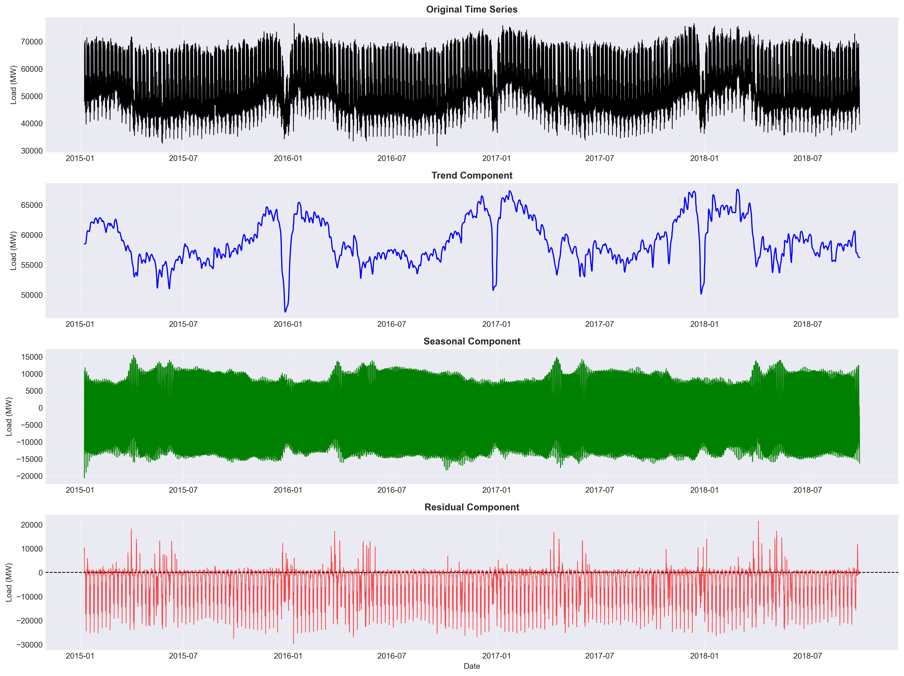
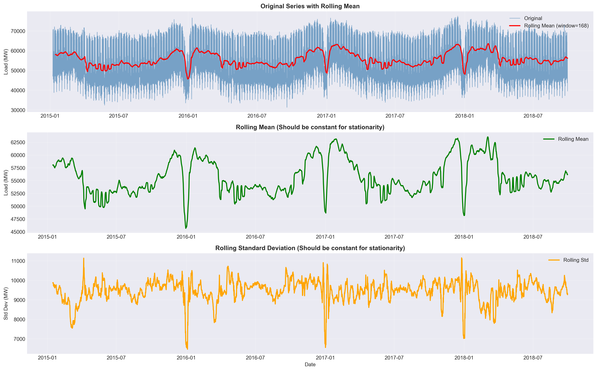
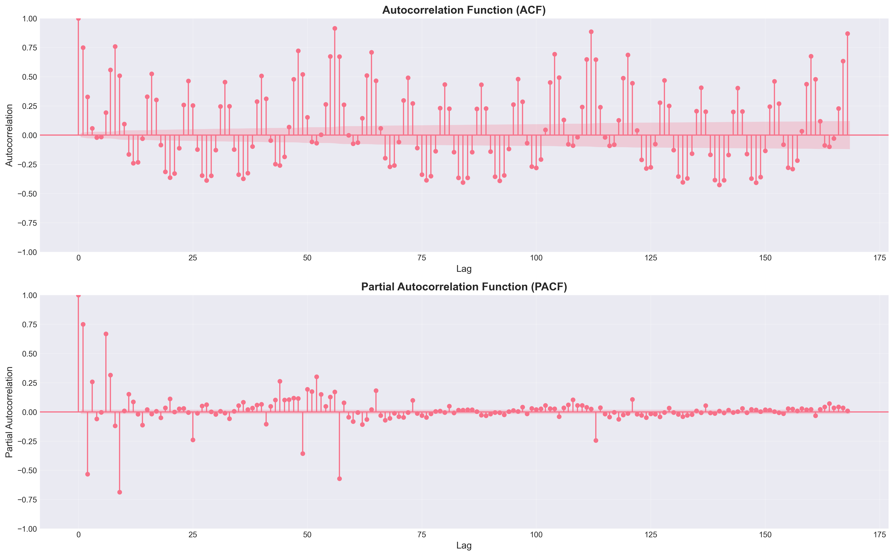
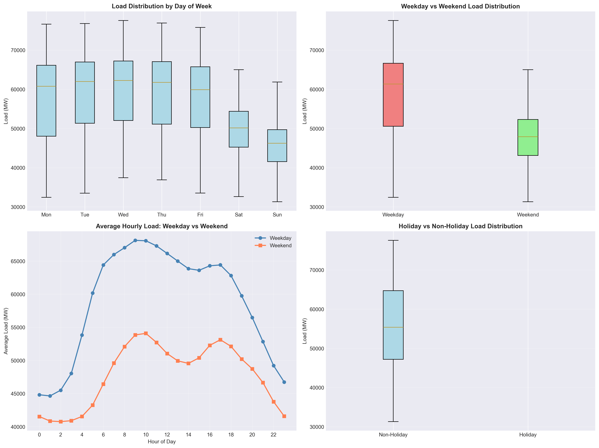
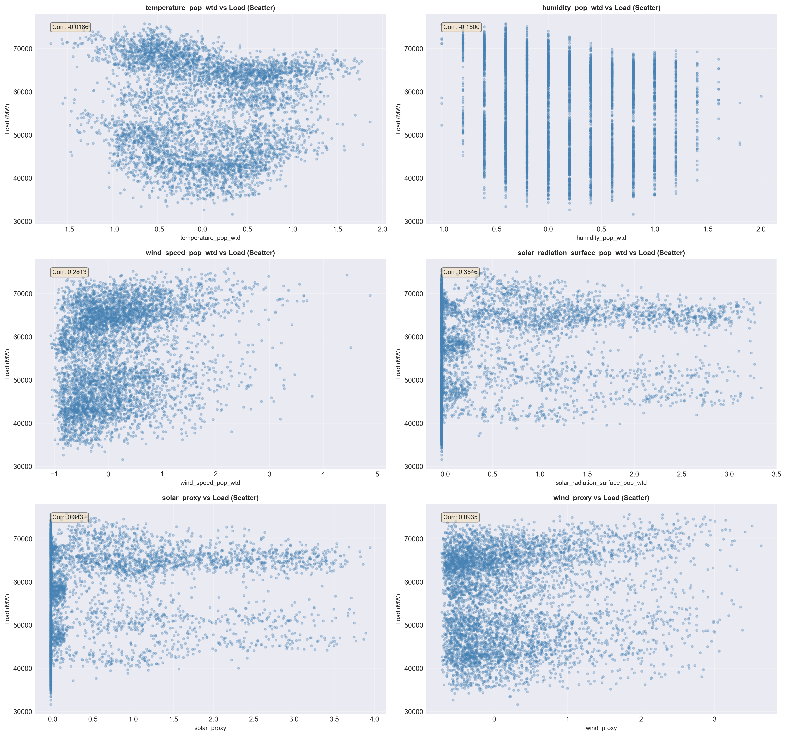
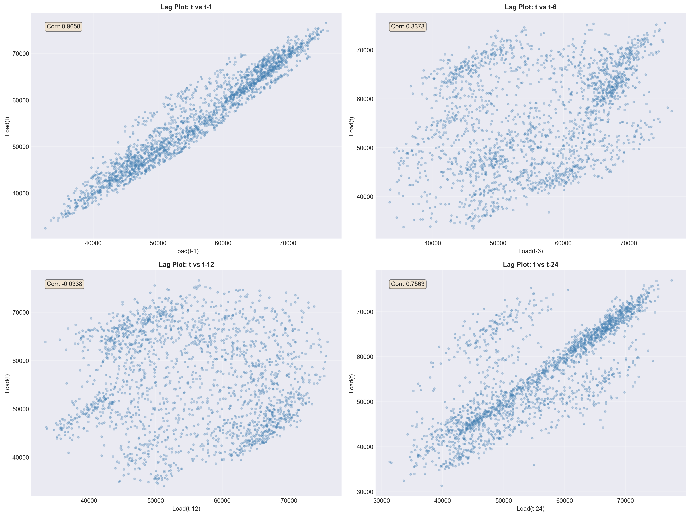

Exploratory Data Analysis
We use EDA to understand demand patterns, seasonality, autocorrelation structure, calendar effects,
and relationships between load and weather. These insights guide SARIMA configuration and feature
design for LSTM / Hybrid / Ensemble models.
Time range (UTC)
2015-01-08 → 2018-09-30
Peak threshold (p90)
≈ 68,857 MW
Peak hours share
≈ 10% (3,268 hours)
EDA Steps
Click a step to view key observations and plots. Click any plot to zoom.
1 Time series overview
Overall signal, trends, visible peaks
2 Seasonality patterns
Daily/weekly cycles and monthly effects
3 STL decomposition
Trend, seasonal component, residual spikes
4 Stationarity checks
Rolling mean/std and test guidance
5 ACF and PACF
Autocorrelation lags for SARIMA design
6 Calendar effects
Hour/day/week/month heatmaps and comparisons
7 Weather relationships
Scatter plots between weather and load
8 Lagged relationships
Lag plots showing dependence structure
Time series overview
The load series shows strong recurring cycles and seasonal peaks across years.
Daily fluctuations dominate the short-term structure, while slower shifts reflect trends.
Peak events are visible as high-load periods and motivate peak-focused evaluation.

Electricity Load — Time Series Overview
Seasonality patterns
Clear daily and weekly cycles are visible in hourly and weekday aggregates.
Month-wise patterns indicate stronger demand in winter months compared to summer.
Heatmaps reveal typical high-demand windows on weekdays versus weekends.

Seasonality — Hour/Weekday/Month Patterns
STL decomposition
STL separates the signal into trend, seasonal, and residual components.
Seasonality explains a large part of variation; residual spikes highlight unusual demand events.
This decomposition supports SARIMA design and residual learning in hybrid models.

STL Decomposition
Stationarity checks
Rolling mean and rolling standard deviation help visually assess stationarity.
Stationarity tests (ADF/KPSS) guide whether differencing is needed for SARIMA.
We validate stationarity decisions again via SARIMA residual diagnostics.

Stationarity — Rolling Statistics
ACF and PACF
ACF/PACF reveal strong dependence at short lags and seasonal lags (daily/weekly).
These plots support choosing SARIMA orders and seasonal period settings.
Key lags often include 1, 24 and 168 hours in hourly load forecasting.

ACF and PACF
Calendar effects
Demand differs significantly across weekdays and weekends.
Hour × day heatmaps highlight typical high-demand windows during business hours.
Month × weekday effects indicate seasonality and operational shifts across the year.

Calendar Effects
Weather relationships
Weather features show non-linear and scattered relationships with load.
Temperature, wind speed, and solar radiation are important signals for demand behavior.
Proxy features can summarize weather influence and reduce noise for learning models.

Weather Exploration
Lagged relationships
Lag plots show strong dependency between current load and short lags (e.g., t-1).
Daily lag (t-24) also shows strong structure and motivates seasonal modeling.
These insights support lag features and rolling windows for LSTM and hybrid learning.

Lagged Relationships